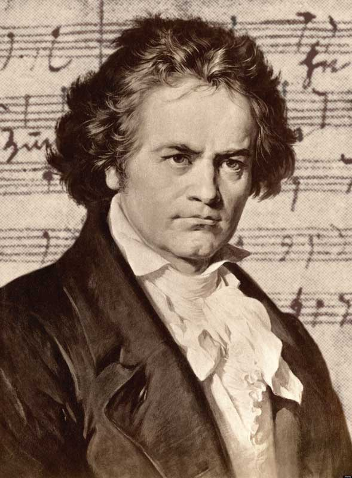

Ludwig van Beethoven
German composer and pianist whose music ranks amongst the most performed of the classical music repertoire

Grumpy Beethoven
Here is the most important moments in Ludwig van Beethoven's life
- 1770 - Beethoven was born December 16th uncertain in Bohn, Germany
- 1778 - Ludwig's first known public performance, at Cologne
- 1782 - Publication of first work in Beethoven life known as the Dressler Variations
- 1783 - Publication of three sonatas and other works
- 1784 - Ludwig is appointed organist to the Choir of Maximilian Franz. He is 14 year old
- 1787 - Visited Vienna, studied with Mozart
July 17th: death of his mother - 1789-1792 - Played for four seasons as violinist at the Opera of Bonn
Numerous Beethoven compositions - 1791 - Death of Mozart
- 1792 - November 2nd: Left for Vienna
November 10th: Arrived at Vienna
Musical studies with Haydn
December 18th: Death of his father - 1794 - January 19th: Haydn returns to London. Ludwig studies with Albrechtsberger
Composition of his first major work: Trios for Piano (opus 1) - 1795 - March 29th: First public appearance at Vienna; he played his own works
July: Finished his studies with Albrechtsberger
August: Trios for Piano (opus 1) published
September: Haydn returns to Vienna and meets Ludwig
Proposes to Magdalena Willmann, but she refuses him - 1796 - Numerous Beethoven compositions and a concert given at Prague
July: Returns to Vienna after Prague, Dresden, Leipzig, and Berlin before leaving for a concert in Budapest - 1797 - Probably the year of a serious illness, which triggered his deafness
- 1799 - Instruction by Salieri
Began composing the first symphony - 1800 - Concert at Vienna, playing of his first symphony
End of the year: Composition of his second symphony - 1802 - February: Finished his second symphony
April: left for Heiligenstadt in the hope that his hearing would improve
Returned to Vienna in October - 1803 - January: Ludwig became the composer of the Theatre of Vienna, where he lived with his brother Carl
June-October: Composed the Eroica symphony
August 6th: The piano maker Sébastien Erard sent him a new piano, as a present. This allowed for bigger intervals - like the pianos we have today - 1804 - His contract with the theatre finishes
- 1805 - April 7th: First public performance of the Eroica symphony
Numerous workings on Leonore, with a premiere on November 20 - 1806 Journey with the Prince Lichnowsky, and composition of the fourth symphony
- 1808 - Composition of the sixth symphony
- 1809 - April 9th: War is declared against France
May 10th: French army surrounds Vienna
May 11th-12th: France takes possession of Vienna
Beethoven teaches music to Archduke Rudolphe - 1810 - Beethoven presents 'The Letter for Elise' to Thérèse Malfatti
- 1811 - Beethoven begins writing the seventh symphony
- 1812 - March 2nd: Presentation of 'To the Beloved' to Antonie Brentano
May: Writing of the seventh symphony
Writing of the letter to "The Immortal Beloved" - 1813 - First public presentation of the eighth symphony
- 1814 - February 27th: Playing of the eighth symphony
May 23rd: First presentation of Fidelio - 1816 - Beethoven becomes ill
- 1817 - Beginning of the year: Beethoven is still ill
September 10th: Writing of the first bars of the ninth symphony - 1818 - February 14th: Beethoven and Salieri recommend the metronome in the Viennese press.
February: Beethoven's deafness is such that he has to use a notebook and pencil to converse with visitors.
December 3rd: Karl runs away to his mother's home, but Beethoven demands that the police bring him back. - 1821 - Beethoven becomes regularly ill
- 1822 - Pursues the composition of the ninth symphony and the beginnings of the tenth
- 1824 - Works on the tenth symphony (only the first movement was written in detail)
February: Finished writing the ninth symphony
May 7th: Public playing of the ninth symphony - 1826 - Beethoven's health starts to decline. He undergoes an operation
- 1827 - He undergoes three further operations in the first two months of the year
March 26th: Ludwig van Beethoven dies